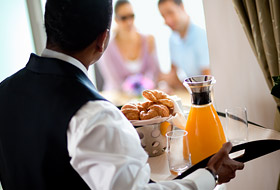

셀러브리티 크루즈 전세계 주요 운항지역
| 셀러브리티 크루즈 | 보유 크루즈쉽 | 운항지역 |
| 셀러브리티 라이프 액티비티 | 레스토랑&카페 | 스파&피트니스 |
| 엔터테인먼트 | 선실 | 캡틴스클럽 멤버쉽 |
화려한 수상 경력에 빛나는 바다 위 최고의 레스토랑, 셀러브리티 크루즈의 특별한 휴가는 다이닝에서 시작됩니다.
셀러브리티 크루즈는 권위 있는 레스토랑 가이드북 미슐렝에서 선정된 스타 쉐프 자크 반 스타덴을 통해 다이닝의 수준을 한층 끌어 올렸습니다.
세계적인 주방장이 엄선한 전세계 각국에서 영감을 얻은 풀 코스 다이닝에서 시작해 개인의 식성에 다양한 요리를 제공하는 스페셜티 레스토랑에 이르기까지 세련되고 다양한 맛의 항연을 즐겨 보십시오. Bon Appetit.
자세히 보기 목록
-
메인 다이닝 | Main Dinning
세계적인 쉐프가 엄선한 화려한 수상 경력을 자랑하는 풀코스 다이닝은 셀러브리티 크루즈 여행이 주는 또 다른 즐거움입니다. 자세히 보기
-
큐진 | Qsine
음식과 함께 떠나는 세계 여행, 퀴진은 인터내셔널 요리를 선보이는 스페셜티 레스토랑으로 지금껏 경험하지 못한 새로운 맛의 즐거움과 놀라움을 선사합니다. 자세히 보기
-
블루 | Blu
아쿠아 클래스 선실 고객을 위한 'Clean Cuisine' 개념의 스페셜티 레스토랑으로, 신선한 재료와 더불어 저염식, 저칼로리 음식을 제공하는 지중해식 건강식단으로 진정한 웰빙을 누려보세요. 자세히 보기
-

무라노 | Murano
정통 프랑스 풀코스 정찬을 제공하는 스페셜티 레스토랑. 클래식한 인테리어, 고품격 서비스와 함께 선상 위 최고의 월드 클래스 다이닝을 만나세요. 자세히 보기
-

오션뷰 카페&바 | Ocean View Cafe&Bar
뷔페 스타일로 편안한 식사를 할 수 있는 레스토랑으로 아침, 점심 식사를 보다 편안한 분위기에서 즐길 수 있으며, 멕시칸식, 프랑스식, 이탈리아식 등 다양한 국가의 음식을 맛볼 수 있습니다. 자세히 보기
-

룸서비스 | Room Service
셀러브리티 크루즈의 또 다른 즐거움, 24시간 무료 룸서비스. 객실에서도 편안하게 셀러브리티의 다이닝을 경험할 수 있습니다. 자세히 보기